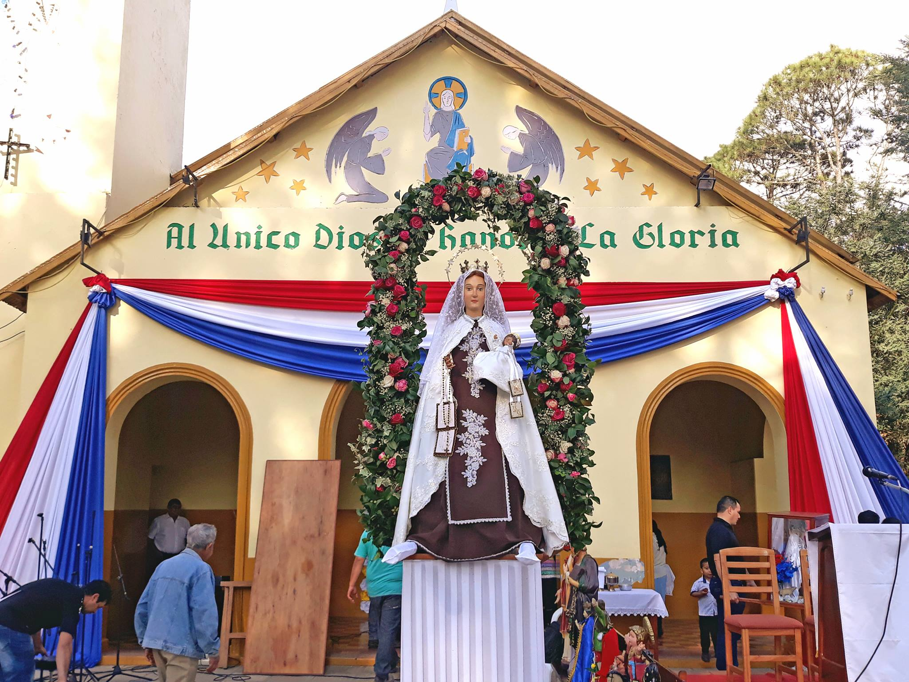

Fiesta Patronal
Se viene la Gran Fiesta en honor a la Virgen del Carmen.
Les esperamos el día martes 16 de julio para la misa y posterior serenata a la virgencita, para
luego agazajarnos con el almuerzo show junto al participación especial del grupo Jarenko de Coronel
Bogado.
